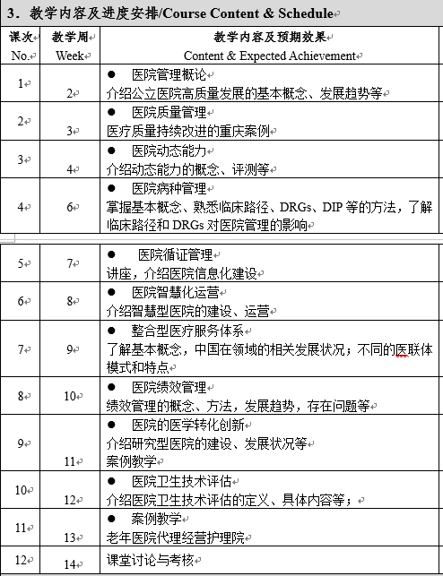

2025秋 · MANA60056.01 · 黄葭燕、陈英耀、梁笛、周萍、魏艳、杨帆
来源：复旦教务系统教学大纲，本轮使用已授权账号下载。原始正文与考核信息；去除联系方式和网页脚本，内嵌图片按原字节去重保存。
本课程针对社会医学与卫生事业管理专业的研究生开设，通过教学案例和课题讨论的形式，介绍医院管理学的理论概念和前沿发展。
每次课程，以理论介绍开场，讲解每个主题的理论概念、特点、原则、国家政策等。然后以案例教学为主，通过案例剖析、师生互动讨论等形式，介绍相关内容或主题在中国的实际开展情况，让学生建立更好的理性与感性认识。
This course is designed for postgraduate students in Social Medicine and Health Care Management and introduces theoretical concepts and cutting-edge developments in hospital management through teaching cases and topic discussions.
For each course, it opens with a theoretical introduction that explains the theoretical concepts, characteristics, principles, and national policies of each topic.Then the course is based on case teaching, introducing the actual development of related contents or topics in China through case analysis and interactive discussions between teachers and students, so that students can build up a better rational and perceptual understanding.
通过本课程的学习，学生应进一步理解医院管理学的相关理论概念和实践方法，掌握医院内部的实际管理流程，了解医院管理工作面临的新问题、新形势，并通过案例学习培养研究生在开展医院管理相关研究方面的独立科研能力。
理论 + 案例教学

见上表
| 项目 | 比例 | 评定说明 |
|---|---|---|
| 出勤Attendance | 10.0% | 缺席一次，扣5分 |
| 课堂表现Participation | 10.0% | 参与课堂讨论的积极性，给予评分 |
| 作业/实验/实践Assignment | 20.0% | 完成中国大学慕课网《现代医院医院管理学理论》的学习，并通过考试 |
| 课题论文Research Paper | 60.0% | 设计一个相关的医院管理领域的研究方案 包括研究背景、研究目的、研究内容与方法、关键技术问题、技术路线等。 选题新颖性，5分； 方案设计完整性，20分； 方案设计科学性，15分； 方案设计科学性，10分 ；方案撰写逻辑性，10分； |